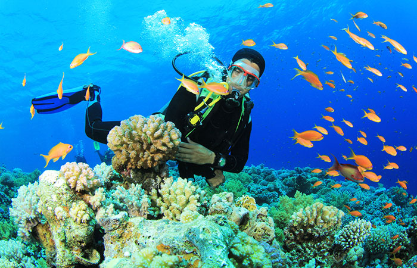

Adventure Experiences in Sri Lanka
With varying climates and Geography packed into a small island Sri Lanka offers a range of adventures from the top of the mountains to the depths of the oceans.
Other than taking a dip in the oceans or snorkelling, scuba diving and surfing are the most popular beach sports in the country.
Scuba diving has long history in the country.
Today the oceans filled with coral gardens, multitude of exotic fishes and ancient wrecks Sri Lanka offers one of the best diving experiences in the world.
Although comparatively new to the country surfing too has made its mark in the Southern and Eastern coasts of the island for the last twenty five years.
The sea around Sri Lanka is also one of the most challenging marine game fishing locations while white water rafting, Kayaking and canoeing are some of the relatively new water sports practiced in the country.
With multitude of roads winding through expanding mountains, lush green forests, paddy fields, parks and sleepy villages, Sri Lanka also offers many opportunities to keen hikers and trekkers.
Trail blazing through the tracks and paths on horse or elephant back too is a novel experience introduced recently.
Experience the thrills of crumbling rocks beneath the feet, head spinning heights and the earth expanding beneath when conquering many mountains of Sri Lanka or take over waterfall climbing with exciting climbs like the rock face of Bambarakanda waterfall, the tallest in the country.
Adventure Sports in Sri Lanka

Hot Air Ballooning
A great way to experience the exhilaration of flight with a bird’s eye view of the area below, a silent ride through the sky, an excursion that has caught on fast with locals and tourist alike is hot air ballooning, drifting gently over the cultural triangle, or a wildlife park in a hot air balloon will be unforgettable, actually nothing beats a hot air balloon excursion across the central plains in our opinion. Hot air ballooning tours are available from the north central plains of the island and be carried away under blue skies and over the landscape dotted with many little man-made lakes, one might even spot an elephant near these tanks, ancient monuments
Best hot air ballooning places in Sri Lanka
Sigiriya, Habarana, Kandalama, Dabulla
Best hot air ballooning seasons
Sri Lanka Hot Air Ballooning trips operate during the period of November to May, most often when the winds are light and the sky is at its bluest.
March and April offer the best weather.

Diving
The ocean around Sri Lanka whispers of tales bygone, ones of regal maritime visits, of bandits and pirates and journeys of explorers and spice merchants.
As you plunge into the warm waters and dive below, these stories come to life.
The crystal clear waters of the Indian Ocean with a visibility of 20 meters (65ft) provide perfect conditions for diving.
With wrecks as dated as the 18th Century dotting the seas, deep reefs and reef walls provide enthralling explorations for scuba divers.
For the less adventurous on-shore coral reefs are ideal for snorkelling.
The best dive sites in Sri Lanka
Kalpitiya, Hikkaduwa, Unawatuna, Weligama, Colombo, Trincomalee
Best diving seasons in Sri Lanka
November to May is the ideal time to dive in the west and Southwest coast of the island, while April to October is the best time to dive in the Northeast coast.

White Water Rafting
If you have always dreamt of living like Robinson Crusoe, a plunge into the White Water Rafting in Kitugala is worth a shot.
You will experience rafting in one of the wettest place in the country – Kitugala.
This place is located 90 km from Colombo on the banks of the river Kelani River It offers grade three rapids making it an adventurous experience for both the beginners and intermediate rafters.
The overall rafting experience will leave you completely thrilled.
Best water rafting sites in Sri Lanka
Kithulgala — Kalani River, Avissawella — Kalani River, Mahaweli River Rafting
Best water rafting seasons
April to November is the best time to opt for this activity.

Zipline Experience
This beautiful landscape is home to the jungle, tea, rubber, coconut, forest, heritages and more things.
This island is a combination of adventure, enjoyment, relaxation.
And if you need excitement you need to choose zipline in Sri Lanka.
The thrill of the zipline is one of the most top things you should have in your bucket list.
Best exclusive zip lines in Sri Lanka
Flying Ravana Mega Zipline in Ella, Kitulgala, Belihul Oya, Sembuwatta Lake, AOA Zip Line in Nuwara Eliya, Che Adventure Park in Hanwella